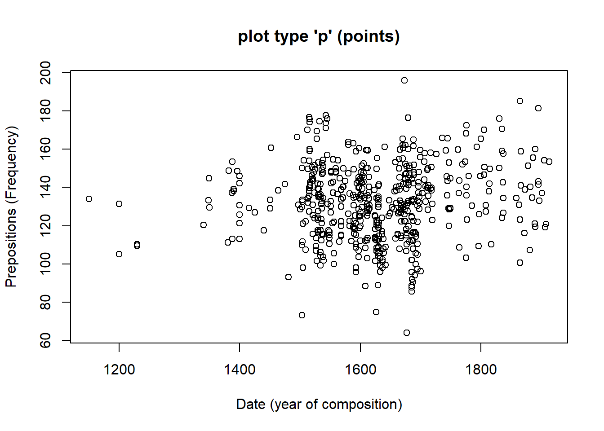
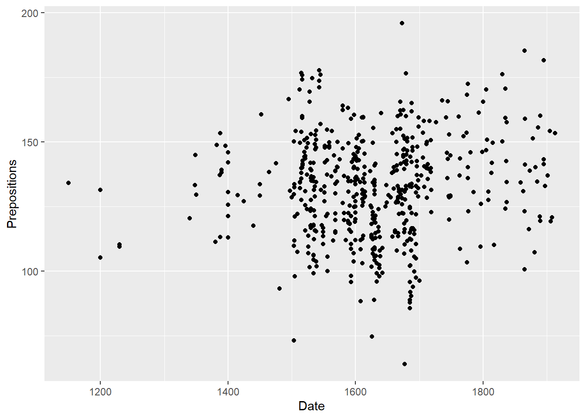
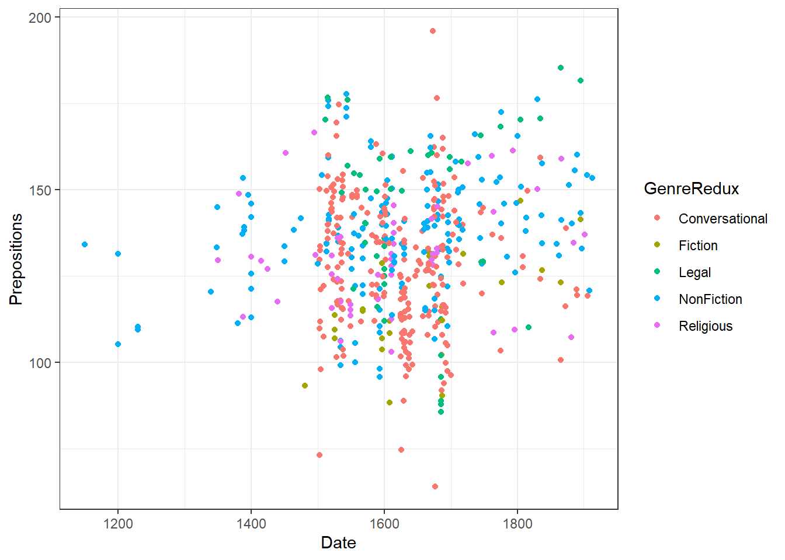
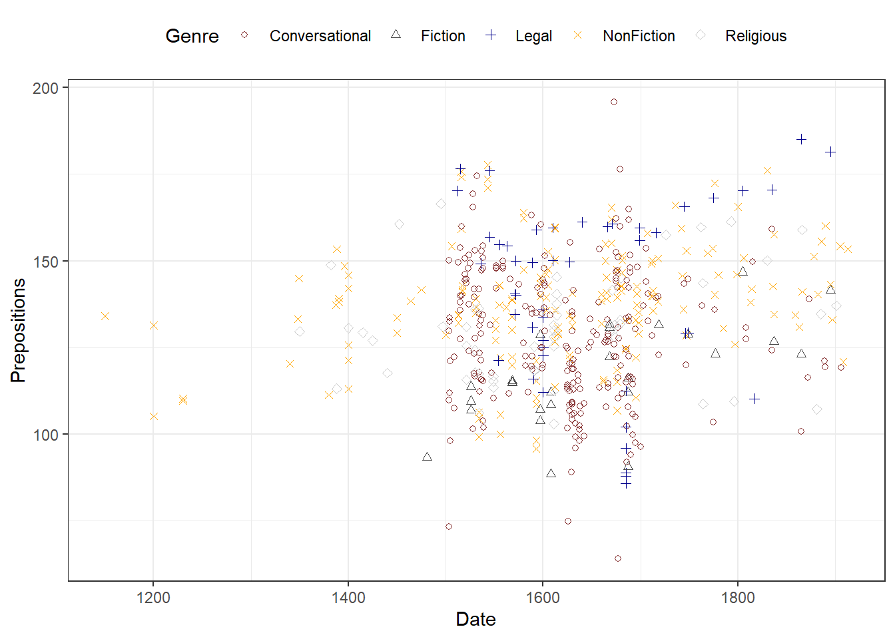
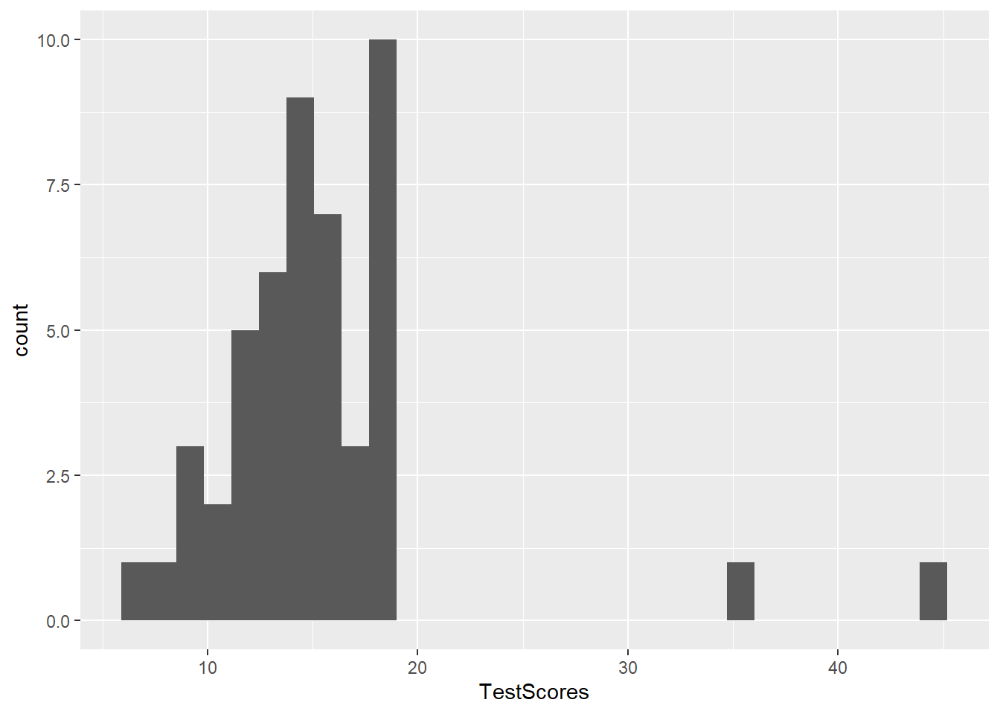
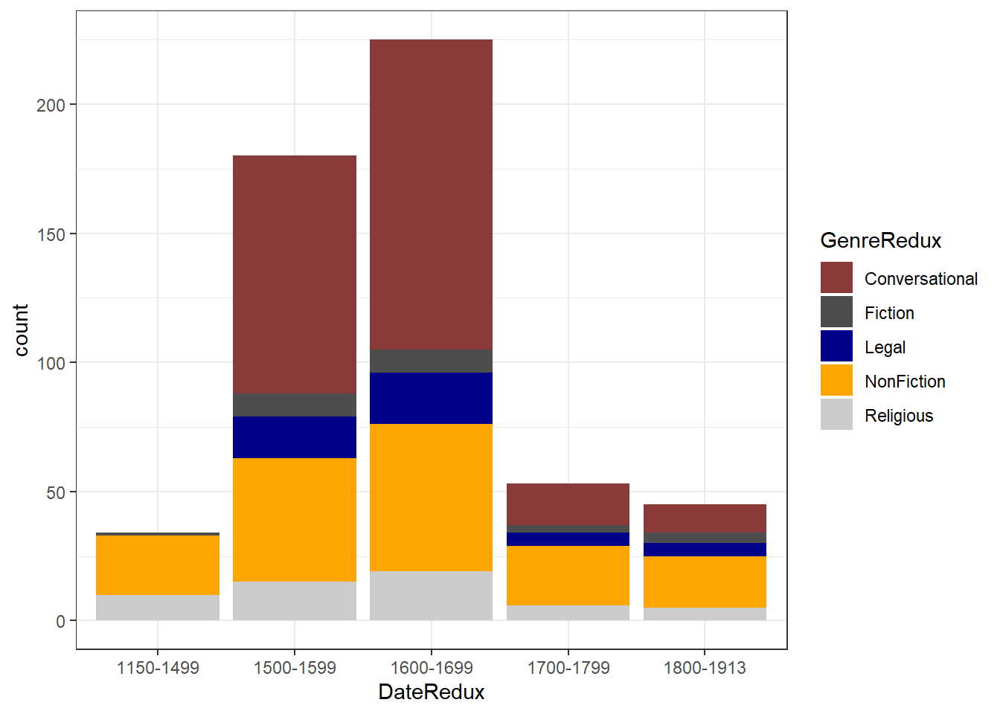

Modifying legends
ggplot(pdat, aes(x = Date, y = Prepositions, color = GenreRedux)) +
geom_point() +
theme(legend.position = "top")ggplot(pdat, aes(x = Date, y = Prepositions, color = GenreRedux)) +
geom_point() +
theme(legend.position = "none")
ggplot(pdat, aes(x = Date, y = Prepositions, linetype = GenreRedux, color = GenreRedux)) +
geom_smooth(se = F) +
theme(legend.position = c(0.2, 0.7)) ## `geom_smooth()` using method = 'loess' and formula 'y ~ x'ggplot(pdat, aes(x = Date, y = Prepositions, linetype = GenreRedux, color = GenreRedux)) +
geom_smooth(se = F) +
guides(color=guide_legend(override.aes=list(fill=NA))) +
theme(legend.position = "top",
legend.text = element_text(color = "green")) +
scale_linetype_manual(values=1:5,
name=c("Genre"),
breaks = names(table(pdat$GenreRedux)),
labels = names(table(pdat$GenreRedux))) +
scale_colour_manual(values=c("red", "gray30", "blue", "orange", "gray80"),
name=c("Genre"),
breaks=names(table(pdat$GenreRedux)),
labels = names(table(pdat$GenreRedux)))
clrs5 <- c("indianred4", "gray30", "darkblue", "orange", "gray80")
clrs3 <- c("indianred4", "gray30", "darkblue")
clrs2 <- c("orange", "gray80")We will now turn to creating the graphs.
7.1 Dot and Scatter Plots
The first, and simplest graph, is a so-called scatter or dot plot. Scatter plots are used when the graph is set up to display the relationship between two numeric variables. We will start off with creating a scatter plot in base, then in lattice and finally in the ggplot environment.
7.1.1 Scatter Plots in base
The most fundamental function to create plots in the base environment is to use the general “plot” function. Here, we use that function to create a simple scatter plot.
# create simple scatter plot
plot(Prepositions ~ Date, # plot Prepositions by Date
type = "p", # plot type p (points)
data = pdat, # data from data set pdat
ylab = "Prepositions (Frequency)", # add y-axis label
xlab = "Date (year of composition)", # add x-axis label
main = "plot type 'p' (points)" # add title
) # end drawing plot
Let us go over the command. The first part of the call is plot which is the function for plotting data in base R. In the round brackets are the arguments in which we specify what the plot should look like. The Prepositions ~ Date part tells R which variables should be displayed and the type = "p" part tells R which type of plot we want (p stands for points, l for lines, b for both lines and points). The part data = pdat tells R which data set to take the data from, and ylab = "Prepositions (Frequency)" and xlab = "Date (year of composition)" informs R about the axes’ labels. The part main = "plot type 'p' (points)" informs R about what we want as the main title of the plot.
7.1.2 Scatter Plots in ggplot2
We now turn to data visualization using ggplot. As the ggplot2 package is already loaded, we create a very basic scatterplot in ggplot2 using the geom_point function to show the advantages of creating visualizations in this environment.
# create simple scatter plot
# use data set "pdat"
ggplot(pdat,
# define axes
aes(x= Date,
y= Prepositions)) +
# define plot type
geom_point() 
Let’s go over the code above. The function call for plotting in “ggplot2” is simply “ggplot”. This function takes the data set as its first argument and then requires aesthetics. The aesthetics are defined within the “ggplot” function as the arguments of “aes”. The “aes” function takes the axes as the arguments (in the current case). Then, we need to define the type of plot that we want. As we want a scatter plot with points, we add the “geom_point()” function without any arguments (as we do not want to specify the size, colour, and shape of the points just yet).
The advantage of “ggplot2” is that is really easy to modify the plot by adding new layers and to change the basic outlook by modifying the theme which is what we will do in the code below.
ggplot(pdat,
# define axes
aes(x=Date,
y= Prepositions,
# define to color by Species
color = GenreRedux)) +
# define plot type
geom_point() +
# define theme as black and white (bw)
theme_bw() 
The white background is created by specifying the theme as a black and white theme (theme_bw()) while the color of the dots is changed by specifying that the color should be applied by Species (color = GenreRedux). Then, the colors to be used are defined in the function scale_color_manual.
We can now specify the symbols in the scatter plot.
# create scatter plot colored by genre
ggplot(pdat, aes(Date, Prepositions, color = GenreRedux, shape = GenreRedux)) +
geom_point() +
guides(shape=guide_legend(override.aes=list(fill=NA))) +
scale_shape_manual(name = "Genre",
breaks = names(table(pdat$GenreRedux)),
values = 1:5) +
scale_color_manual(name = "Genre",
breaks = names(table(pdat$GenreRedux)),
values = clrs5) +
theme_bw() +
theme(legend.position="top")
7.2 Line Graphs
Line graphs are used when we have numeric values that are linked (in one way or another) because they come from the same speaker or genre as in our case). It is important though that there is only one value per time period (or x-axis level). So we group our data by genre and then take the mean so that we only have one value per genre and time period before plotting the data.
pdat %>%
dplyr::group_by(DateRedux, GenreRedux) %>%
dplyr::summarise(Frequency = mean(Prepositions)) %>%
ggplot(aes(x=DateRedux, y= Frequency, group= GenreRedux, color = GenreRedux)) +
# add geom layer with lines
geom_line()
7.3 Histograms
Histograms summarize numeric variables by showing their distribution across bins.
Using ggplot, we specify the variable we want to summarize in the aesthetics and use the geom_histogram function to generate a histogram.
ggplot(pdat, aes(Prepositions)) +
geom_histogram()
We can simply add information about a second variable by specifying this variable as the basis for the coloring of the bars (which we do by specify the fill argument).
ggplot(pdat, aes(Prepositions, fill = Region)) +
geom_histogram()
7.4 Bar plots
# create bar plot data
bdat <- pdat %>%
dplyr::mutate(DateRedux = factor(DateRedux)) %>%
group_by(DateRedux) %>%
dplyr::summarise(Frequency = n()) %>%
dplyr::mutate(Percent = round(Frequency/sum(Frequency)*100, 1))The creation of barplots in ggplot works just like other types of visualizations in this framework. We first define the data and the aesthetics and then use the geom_bar to create a barplot.
# bar plot
ggplot(bdat, aes(DateRedux, Percent, fill = DateRedux)) +
geom_bar(stat="identity") + # determine type of plot
theme_bw() + # use black & white theme
# add and define text
geom_text(aes(y = Percent-5, label = Percent), color = "white", size=3) +
# add colors
scale_fill_manual(values = clrs5) +
# suppress legend
theme(legend.position="none")
Compared with the pie chart, it is much easier to grasp the relative size and order of the percentage values which shows that pie charts are unfit to show relationships between elements in a graph and, as a general rule of thumb, should be avoided.
Bar plot can be grouped to add another layer of information which is particularly useful when dealing with frequency counts across multiple categorical variables. To create grouped bar plots, we plot Region while including DateRedux as the fill argument. Also, we use the command position=position_dodge().
# bar plot
ggplot(pdat, aes(Region, fill = DateRedux)) +
geom_bar(position = position_dodge(), stat = "count") +
theme_bw() +
scale_fill_manual(values = clrs5) If we leave out the
If we leave out the position=position_dodge() argument, we get a stacked bar plot as shown below.
# bar plot
ggplot(pdat, aes(DateRedux, fill = GenreRedux)) +
geom_bar(stat="count") +
theme_bw() +
scale_fill_manual(values = clrs5) 
One issue to consider when using stacked bar plots is the number of variable levels: when dealing with many variable levels, stacked bar plots tend to become rather confusing. This can be solved by either collapsing infrequent variable levels or choose a colour palette that reflects some other inherent piece of information such as formality (e.g. blue) versus informality (e.g. red).
Stacked bar plots can also be normalized so that changes in percentages become visible. This is done by exchanging position=position_dodge() with position="fill".
# bar plot
ggplot(pdat, aes(DateRedux, fill = GenreRedux)) +
geom_bar(stat="count", position="fill") +
theme_bw() +
scale_fill_manual(values = clrs5) +
labs(y = "Probability")
7.5 Boxplots
So far, we have plotted values but we have not plotted the underlying distributions. For instance, we have plotted mean values but not the variance within the distribution. One handy way to combine plotting general trends and their underlying distributions are boxplots.
Boxplots, or Box-and-Whisker Plots, are exploratory graphics first created by John W. Tukey and they show the relationships between categorical and numeric variables. They are very useful because they not only provide measures of central tendency (the median which is the line in the middle of the box) but they also offer information about the distribution of the data. To elaborate, fifty percent of data points fall within the box while seventy-five percent of data points fall within the whiskers (the lines which look like extended error bars): the box thus encompasses the interquartile range between the first and third quartile. The whiskers show the minimum and maximum values in the data and only outliers (data points that lie 1.5 times the interquartile range or more above the third quartile or 1.5 times the interquartile range or more below the first quartile. If the whiskers differ in length, then this means that the data is asymmetrically distributed.
# create boxplot
ggplot(pdat, aes(DateRedux, Prepositions, color = GenreRedux)) +
geom_boxplot(fill=clrs5,
color="black")